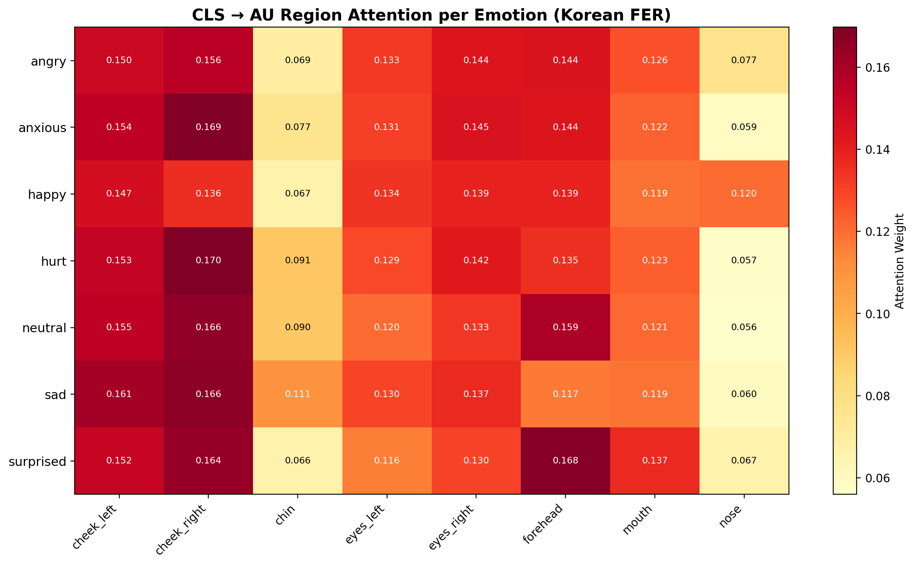
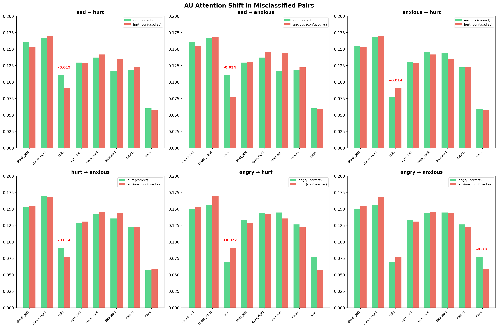
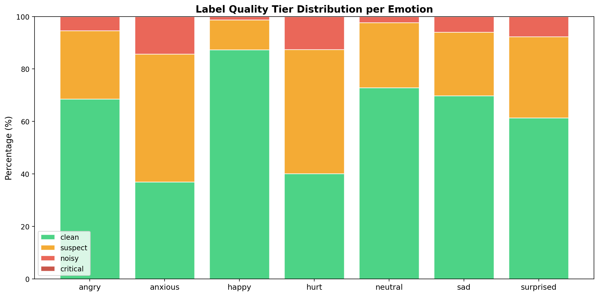

한국인은 감정을 어떻게 표현하는가
24만 장의 얼굴에서 발견한 문화적 구조 — 연구 현황 + FER 동향 + 논문 방향
1. 핵심 주장
한국인의 감정 표현에는 서양 FACS 이론으로 설명되지 않는 문화적 구조가 존재한다.
이 구조는 feature(표정 형태)가 아닌 관계(감정 간 혼동 패턴, AU 공활성, 인구통계 조건부 변화)에 있으며,
Graph 기반 모델링으로 포착할 수 있다.
이 주장의 근거:
- 모델 구조를 바꿔도 80%에서 막힘 (v1→v3) — 모델 문제 아님
- 혼동 감정 제거하면 89% — 특정 감정 구조가 bottleneck
- AU cosine similarity 0.97-0.99 — feature로 구분 불가, 관계로 구분해야
- 혼동이 일방향 (슬픔→상처 11.9%, 역방향 0%) — 문화적 규칙 존재
- 5개 독립 신호가 전부 같은 순서 — 재현 가능한 객관적 패턴
2. 데이터
2.1 원본: AI Hub "한국인 감정인식을 위한 복합 영상"
한국인 1,100명(배우 48%, 일반인 52%)이 7가지 감정을 표현한 사진 ~24만 장. annotator 3명이 각각 독립적으로 감정 판정.
| 항목 | 내용 |
|---|
| 피험자 | 1,100명 (배우 48%, 일반인 52%) |
| 감정 | 기쁨, 분노, 슬픔, 중립, 당황, 불안, 상처 (7종) |
| 라벨링 | annotator 3명 독립 판정 (감정 + bounding box) |
| 학습용 | 413,122장 (얼굴 crop) + 51,805장 (val) |
| AU 영역 | 8개: forehead, eyes×2, nose, cheek×2, mouth, chin |
2.2 연세대 검증 실험
연세대 심리학과 학생 298명이 같은 데이터에 대해 "해당 감정이 아닌 것을 고르세요" 실험을 수행. 사진 10장씩 보여주고 15초 안에 선택.
| 항목 | 내용 |
|---|
| 참여자 | 298명 (심리학과 학생) |
| 방법 | 10장 중 "해당 감정 아닌 것" 모두 고르기 |
| 대상 | 기쁨, 분노, 슬픔, 중립 (4감정) |
| 규모 | 247,490 응답, 242,600장 |
| 핵심 | is_selected=1 = "이 감정 아니다" (앱 소스코드 확인) |
| 결과 | 기쁨/중립 거의 안 걸림, 분노 7.6%·슬픔 8.1% 제거 |
이 실험의 의미: 원본 annotator 3인과 완전히 독립적인 298명의 판단. 두 독립 평가가 같은 결론이면 → 재현 가능한 객관적 패턴.

[그림 1] annotator 일치율 + 연세대 rejection rate

[그림 2] 2명 이상 평가 시 일치율 98.7% — 주관 아닌 객관적 패턴
3. 실험과 근거
각 실험은 "왜 했는지 → 결과 → 해석" 순서로 정리. 하나씩 쌓아서 주장의 근거를 만든다.
3.1 모델 구조 개선 시도 (v1→v3)
왜 했나
성능을 올리기 위해 backbone 확장, fusion layer 추가, regularization 적용.
| 버전 | F1 | 변경 |
|---|
| v1 | 0.795 | MobileViTv2-100, 1 fusion |
| v2 | 0.805 | MobileViTv2-150, 2 fusion, AU self-attn |
| v3 | 0.807 | +EMA, distill, mixup, DropPath |

[그림 3] v1/v2/v3 성능 비교 — 구조 바꿔도 80% 벽
해석: +1.2%p가 최대. 모델 구조 문제가 아님. → 다른 원인이 있다.
3.2 감정 수 축소 실험 (7→4)
왜 했나
혼동이 심한 감정(anxious, hurt, surprised)을 제거하면 나머지 감정의 성능이 올라가는지 확인.
| 실험 | 감정 수 | F1 | Acc |
|---|
| v2 (전체) | 7 | 0.805 | 80.7% |
| 4emo_before | 4 | 0.889 | 89.2% |
해석: 3감정 빼니까 +8.5%p 상승. anxious/hurt/surprised가 다른 감정과 feature가 겹쳐서 전체를 끌어내리고 있었다. 감정 구조 문제 확인.
3.3 라벨 품질 분석
왜 했나
80% 벽이 라벨 자체의 문제인지 확인. annotator 3명이 얼마나 합의하는지.
| 감정 | 3인 일치율 | 해석 |
|---|
| 기쁨 | 96.2% | 매우 명확 |
| 중립 | 88.8% | 명확 |
| 분노 | 70.3% | 모호 |
| 슬픔 | 68.2% | 가장 모호 |

[그림 4] 표현한 감정 vs annotator가 인식한 감정 분포
해석: 슬픔/분노는 전문가 3명도 절반만 합의. 라벨이 원래 모호 — noise가 아니라 감정의 구조적 특성.
3.4 외부 검증 교차 (연세대 298명)
왜 했나
annotator 분석만으로는 "이 3명이 특이한 건 아닌가?"라는 의문. 완전히 독립적인 298명의 판단과 교차하여 신뢰도 확보.
| 검증 | 결과 |
|---|
| 5개 독립 신호 | 전부 같은 순서 (기쁨 > 중립 > 분노 > 슬픔) |
| 2인 교차 일치율 | 98.7% |
| annotator 일치 × 연세대 선택 | 같은 방향 (chi²=424, p<10⁻⁹⁴) |
| 3중 신호 교차 | 최저 8.7% ~ 최고 21.5% (2.5배 차이) |

[그림 5] 5개 독립 신호가 전부 같은 순서

[그림 6] 3중 교차검증 결과
해석: 독립적 신호가 전부 일치 → 재현 가능한 객관적 패턴. 우연이 아님.
3.5 혼동 비대칭 분석
왜 했나
"어떻게" 모호한지 구조를 파악. 혼동이 무작위인지 방향성이 있는지.
| 방향 | 비율 | 역방향 |
|---|
| 슬픔 → 상처 | 11.9% | 0% |
| 분노 → 불안 | 8.8% | 0% |
| 슬픔 → 불안 | 7.7% | 0% |
| 기쁨 ↔ 중립 | 1.6% | 1.6% |

[그림 7] 감정 간 혼동의 비대칭 흐름

[그림 8] annotator 불일치 상위 흐름 (건수)
해석: 부정 감정은 "강→약" 일방향 혼동. 역방향 0%. 이건 무작위 noise가 아니라 문화적 감정 절제 규칙.
3.6 인구통계학적 분석
왜 했나
문화적 경향이라면 성별, 나이, 전문성에 따라 체계적으로 달라야 한다. 그렇지 않으면 문화가 아닌 데이터 잡음일 수 있음.
| 변수 | 발견 | 검정 |
|---|
| 성별 | 남성 분노 +5.3%p, 슬픔 +3.8%p | chi²=169, p<10⁻³⁷ |
| 나이 | 20대 슬픔 67% vs 60대 86% | 18.9%p 차이 |
| 전문인 | 일반인이 배우보다 높음 (-5.7%p) | chi²=215, p<10⁻⁴⁹ |
| 피로도 | 초반 12.3% → 후반 11.0% | r=-0.633 |

[그림 9] 배우 vs 일반인

[그림 10] 성별 비교

[그림 11] 나이대별 분노/슬픔

[그림 12] 피로도 효과
해석: 성별/나이/전문성 모두 p<10⁻³⁷ 수준으로 유의. 문화적 감정 억제가 체계적이라는 증거. 젊은 여성이 가장 억제, 나이든 남성이 가장 명확.
3.7 AU 물리적 분석 (Landmark 237K장)
왜 했나
문화적 차이가 실제 얼굴에서 물리적으로 측정 가능한지. MediaPipe 468 landmark로 237K장 전수 분석.
| 감정 | "확실한 표현"의 핵심 특징 | 효과 크기 (Cohen's d) |
|---|
| 기쁨 | 입꼬리 올라감 + 입 벌림 + 볼 넓어짐 | d=0.79 (large) |
| 분노 | 입 벌림 + 눈썹 찡그림 | d=0.48 (medium) |
| 슬픔 | 눈 감김 + 입 다물기 | d=0.43 (medium) |
| 중립 | 입 다물기 + 무표정 | d=0.27 (small) |
해석: 한국인 감정별 물리적 특징이 정량적으로 다름. 측정 가능한 차이가 존재.
3.8 AU Feature Space 분석
왜 했나
모델이 왜 80%에서 막히는지의 직접적 원인. CNN/ViT가 추출하는 AU feature에서 감정이 분리되는지.
| 지표 | 수치 | 의미 |
|---|
| 감정 간 AU cosine similarity | 0.97-0.99 | feature로 구분 불가능 |
| anxious ↔ hurt | 0.999 | 사실상 동일 |
| kNN 불일치 (anxious) | 0.54 | 이웃 절반이 다른 감정 |

[그림 13] 감정별 AU Attention Heatmap

[그림 14] 감정 간 AU 패턴 유사도 — 전부 0.97+

[그림 15] 오분류 시 AU attention 이동 패턴
해석: feature space에서 감정이 분리 안 된다. CNN/ViT의 구조적 한계. feature가 아닌 "관계"를 학습해야 한다 → Graph.
3.9 Soft Label 실험 (v5)
왜 했나
라벨을 정제(soft label + sample weight)하면 feature 한계를 우회할 수 있는지 시도.
| 실험 | F1 | 결과 |
|---|
| v3 (hard label) | 0.807 | baseline |
| v5 (soft label) | 0.538 | 실패 |
해석: 라벨 바꿔도 feature가 같으면 소용 없다. KL loss가 학습 방향을 희석. 라벨 정제가 아닌 구조적 접근 필요 → Graph 모델링.
3.10 Noise Quality 3-stage 분석
왜 했나
metadata(annotator) + model(cleanlab) + feature(kNN) 3개 독립 신호로 샘플별 quality score 산출.
| Tier | 비율 | 감정별 noisy 비율 |
|---|
| clean | 62.4% | happy 1.5% |
| suspect | 30.3% | angry 5.7% |
| noisy | 7.0% | hurt 13.0% |
| critical | 0.4% | anxious 14.7% |

[그림 16] 감정별 noise tier 분포
해석: 3개 독립 신호가 전부 같은 감정 순서. happy가 가장 깨끗하고 anxious/hurt가 가장 noisy — 모든 분석이 일관.
4. 종합 해석
한국인 감정 표현의 5가지 문화적 특성
- 밝은 감정(기쁨)은 보편적 — 성별/나이/전문성 무관 96%+ 인식
- 부정 감정은 "강→약" 일방향 혼동 — 슬픔→상처, 분노→불안 (역방향 0%)
- 젊은 여성의 부정 감정이 가장 모호 — 20대 여성 추정 ~63%
- 자연 표현 > 연기 — 배우보다 일반인 인식률 높음
- AU feature로 구분 불가 — cosine sim 0.97+ → 관계로만 구분 가능
80% 한계의 구조적 원인
feature separability ❌ (AU sim 0.97-0.99)
label ambiguity ⭕ (annotator 48-51%)
relational structure ⭕ (일방향 혼동, 인구통계 조건부)
→ 답: feature가 아닌 관계를 학습하는 모델 = Graph

[그림 17] v2 Confusion Matrix

[그림 18] 감정별 F1 Score
5. FER 연구 동향 (2024-2026)
5.1 GNN/Graph 기반 FER
AAAI 2025
Adaptive Graph Convolution for AU Relationship
FACS 고정 그래프 대신 학습 가능한 adjacency. AU 관계가 expression-dependent.
✅ expression-dependent면 culture-dependent일 수도. 한국인 adaptive graph ≠ 서양.
NeurIPS 2024
Causal AU Relationship Discovery
PC algorithm으로 AU 인과 DAG 학습. correlation이 아닌 causation.
✅ 한국인 AU causal graph가 서양과 다르면 독자적 contribution.
CVPR 2024
EmotiGraph: Heterogeneous Graph for FER
spatial landmark + AU + emotion prototype 3종 노드. Heterogeneous message passing.
✅ 우리 데이터 그대로 매핑: AU + emotion + annotator disagreement.
5.2 Label Noise / Ambiguity
CVPR 2024
Learning from Crowds: Disagreement as Signal
annotator disagreement를 noise가 아닌 정보로. 각 annotator의 confusion matrix 학습.
✅ 우리 annotator A/B/C 데이터에 직접 적용. "true" vs "perceived" 분리.
NeurIPS 2024
Emotion-Topology-Aware Label Smoothing
confusion matrix로 감정 간 거리 정의. 가까운 감정에 더 많이 smoothing.
✅ 우리 confusion flow = emotion topology. 한국인 특화 topology smoothing 바로 가능.
NeurIPS 2024
Evidential Deep Learning for FER
Dirichlet output으로 "진짜 모호" vs "모델 무지" 분리.
✅ 슬픔↔상처가 genuinely ambiguous인지 분리 가능.
5.3 문화/인구통계
IJCV 2024
ExpressDialect: Regional Expression Variations
8개 문화권 AU co-occurrence 비교. "표정 방언(dialect)" 개념.
✅ 직접적 선행. 여기에 "Korean dialect" 추가가 우리 contribution.
5.4 Multimodal + VLM + 새 아키텍처
ACM MM 2024
Heterogeneous Graph Multimodal Fusion
face+audio+text를 hetero graph. Bio signal = context node.
✅ KMER 시뮬레이터 데이터에 직접 적용. S-PACE graph 버전.
AAAI 2025
AffectGPT: Cultural Prompting for FER
VLM + cultural prompting → East Asian +3%.
✅ 문화 prompting 효과 검증. 우리 findings를 prompt로 주입하면 추가 개선.
6. 아무도 안 한 것 (= 우리 기회)
| Gap | 선행 연구 | 논문 가능성 |
|---|
| 한국인 AU relationship graph 학습 | 0편 | ★★★ |
| Confusion flow를 directed graph edge로 | 0편 | ★★★ |
| Annotator disagreement + Graph 결합 | 0편 | ★★★ |
| Bio signal을 AU graph context node로 | 0편 | ★★★ |
| Culture-specific AU Shapley 설명 | 0편 | ★★ |
7. 왜 이 연구가 중요한가
Framework-level Impact
한국인 감정 구조를 정의하면 → 모든 문화권에 같은 방법론 적용 가능 → "감정 표현의 세계 지도". 논문 1편이 아니라 시리즈.
적용 가능한 구조 — 무궁무진
| 구조 | 적용 |
|---|
| GNN / GAT | 한국인 AU 관계 graph 직접 학습 |
| MoE | 인구통계 subgroup별 expert |
| Multimodal | face + audio + bio → hetero graph |
| VLM (CLIP) | 한국 문화 prompting |
| Transformer | AU attention bias (한국인 prior) |
| Mamba/SSM | bio temporal + emotion transition |
| Contrastive | 한국 vs 서양 pair 대비 |
| Evidential | "진짜 모호" vs "모델 무지" 분리 |
| Hyperbolic | 감정 계층 곡률 공간 표현 |
| LLM / Agent | 한국 문화 감정 이해 (BioToken) |
Q1 논문 요건
| 요건 | 충족 | 근거 |
|---|
| Novel data | O | 237K + 외부 298명 = 유일 |
| Novel finding | O | 비대칭 혼동, AU dialect, 인구통계 |
| Novel method | O | culture-aware graph + topology |
| Reproducible | O | 공개 데이터 + 통계 검정 |
| Impactful | O | 전 문화권 확장 가능 |
8. 논문 계획
스토리라인 (메인)
| # | 내용 | 근거 (우리 실험) |
|---|
| 1 | 한국인 FER 80% 벽 | v1→v3: 모델 바꿔도 안 올라감 |
| 2 | 혼동 감정 빼면 89% | 4감정 실험: 특정 감정이 bottleneck |
| 3 | 라벨이 원래 모호 | annotator 48-51% 일치 |
| 4 | 외부 검증도 동일 결론 | 298명, 5개 신호, 98.7% 일치 |
| 5 | 혼동은 방향성 구조 | 비대칭 + 인구통계 체계적 |
| 6 | 물리적 차이는 있으나 feature로 분리 불가 | landmark d=0.79, AU sim 0.97 |
| 7 | 라벨 정제로는 안 됨 | v5 soft label 실패 |
| 8 | 관계를 Graph로 학습 | GNN literature + gap 분석 |
| 9 | 성능 향상 + 문화적 패턴 도출 | (실험 예정) |
논문 1: Q1 한국인 감정 AU Graph
AU Graph + GAT + Emotion Topology
주장: 한국인 감정에는 feature가 아닌 관계 구조 존재, Graph로 포착 가능
타겟: IEEE TAFFC (IF~11) or ACM MM
논문 2: Q1 Annotator Disagreement Graph
Disagreement as Structure + Evidential Learning
주장: annotator 불일치는 noise가 아닌 감정의 문화적 구조 반영
타겟: AAAI or Pattern Recognition (IF~8)
논문 3: Q1 Multimodal Emotion Graph
Heterogeneous Graph: Face + Audio + Bio
주장: 표정만으로 안 되는 감정은 멀티모달 graph fusion으로
타겟: ACM MM or IJCAI
타겟 저널
| 타겟 | IF / Rank | 적합성 |
|---|
| IEEE TAFFC | IF ~11, Q1 | ★★★ (메인) |
| ACM MM | Top-tier conf | ★★★ |
| AAAI | Top-tier conf | ★★ |
| Pattern Recognition | IF ~8, Q1 | ★★★ |
부록: 데이터 위치
| 데이터 | 위치 | 크기 |
|---|
| AU 학습 이미지 | /home/ajy/FER_03_aihub_au_vit/data2/data_processed_korea/ | 37GB |
| 원본 (전신) | /mnt/ssd2/한국인 감정인식.../ | 1.4TB |
| 시뮬레이터 초기 | /data/heartlab/Simulator_data/ | 252GB |
| 시뮬레이터 본 | /mnt/ssd2/KMER_Sensing_Backup/ | 486GB |
| AU CSV | /mnt/hdd/ajy_25/au_csv/ | 134MB |
| Quality CSV | /mnt/hdd/ajy_25/au_csv/index_train_full_quality.csv | 240MB |
| AU embedding | AU-RegionFormer/data/label_quality/au_embeddings/ | 13GB |
| Landmark 특징 | AU-RegionFormer/data/label_quality/face_features.csv | 140MB |